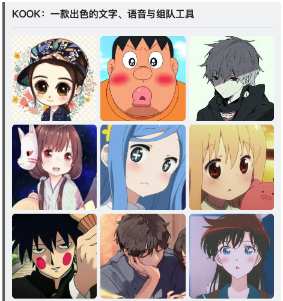

XML 卡片消息
Kook.CardMarkup 命名空间提供了将使用 XML 标记语言定义的卡片消息反序列化为 ICard 对象的方法。
入门
下面的示例中，我们创建一个简单的，由标题、分割线和 9 张图片组成的一个卡片消息。
XML 标记
创建一个 XML 文件，定义卡片消息的内容：
<?xml version="1.0" encoding="UTF-8"?>
<card-message xmlns="https://kooknet.dev"
xmlns:xsi="http://www.w3.org/2001/XMLSchema-instance"
xsi:schemaLocation="https://kooknet.dev https://kooknet.dev/card-message.xsd">
<card>
<modules>
<header>
<plain>KOOK：一款出色的文字、语音与组队工具</plain>
</header>
<divider />
<images>
<image src="https://img.kaiheila.cn/assets/2021-01/pWsmcLsPJq08c08c.jpeg" />
<image src="https://img.kaiheila.cn/assets/2021-01/YIfHfnvxaV0dw0dw.jpg" />
<image src="https://img.kaiheila.cn/assets/2021-01/YevTY6eGJa0fk0f2.jpeg" />
<image src="https://img.kaiheila.cn/assets/2021-01/r2K9RjHZ4s0xc0xc.jpeg" />
<image src="https://img.kaiheila.cn/assets/2021-01/klosFRTVy90jz0k0.jpg" />
<image src="https://img.kaiheila.cn/assets/2021-01/veHnEhzu6c0dw0dv.jpg" />
<image src="https://img.kaiheila.cn/assets/2021-01/tiVWPIuTrf0dw0dw.jpg" />
<image src="https://img.kaiheila.cn/assets/2021-01/wExzRIrTeR0j60j7.jpeg" />
<image src="https://img.kaiheila.cn/assets/2021-01/AybvLWYQgA0dw0dw.jpg" />
</images>
</modules>
</card>
</card-message>
XML 声明
文件第一行为 XML 声明，指定 XML 版本和字符编码：
Warning
字符编码必须是 UTF-8。
XML 版本必须是 1.0。
<?xml version="1.0" encoding="UTF-8"?>
卡片消息
XML 根元素为 <card-message>，代表一个卡片消息，每一个 <card-message> 元素可以包含多个 <card> 元素。
<card-message> 元素上需要指定 XML 命名空间，以及 XML Schema 文件的位置：
<card-message xmlns="https://kooknet.dev"
xmlns:xsi="http://www.w3.org/2001/XMLSchema-instance"
xsi:schemaLocation="https://kooknet.dev https://kooknet.dev/card-message.xsd">
xmlns=https://kooknet.dev指定了默认 XML 命名空间，卡片消息所有的元素均在该命名空间下。xmlns:xsi="http://www.w3.org/2001/XMLSchema-instance"指定了 XML Schema 实例命名空间，并设置命名空间前缀为xsi。xsi:schemaLocation="https://kooknet.dev https://kooknet.dev/card-message.xsd"调用了xsi命名空间下的schemaLocation属性，指定了https://kooknet.dev命名空间下的 XML Schema 文件位置在https://kooknet.dev/card-message.xsd。
卡片
<card> 元素代表一个卡片，每一个 <card> 元素包含一个 <modules> 元素，用于包含卡片的组件。
关于卡片，请参阅 卡片。
反序列化
使用 Kook.CardMarkup.CardMarkupSerializer 将 XML 卡片消息反序列化为 ICard 对象：
Warning
Try... 方法只适用于同步调用。
Note
此示例传入参数为 XML 文件的 FileInfo 类实例。
所有方法均有传入参数为 Stream 或 string 的重载。
传出参数的类型均为 IEnumerable<ICard> 或 Task<IEnumerable<ICard>>。
var xmlFile = new FileInfo("sample-card.xml");
// 同步调用
var cards = CardMarkupSerializer.Deserialize(xmlFile);
// 同步调用，使用 Try... 方法
var canDeserialize = CardMarkupSerializer.TryDeserialize(xmlFile, out var cards);
// 异步调用
var cards = await CardMarkupSerializer.DeserializeAsync(xmlFile);
// 异步调用，传入 CancellationToken
var cts = new CancellationTokenSource();
var cards = await CardMarkupSerializer.DeserializeAsync(xmlFile, cts.Token);
渲染效果
该 XML 卡片消息等效于以下 JSON 格式的卡片消息：
[
{
"type": "card",
"theme": "secondary",
"size": "lg",
"modules": [
{
"type": "header",
"text": {
"type": "plain-text",
"content": "KOOK：一款出色的文字、语音与组队工具"
}
},
{
"type": "divider"
},
{
"type": "image-group",
"elements": [
{
"type": "image",
"src": "https://img.kaiheila.cn/assets/2021-01/pWsmcLsPJq08c08c.jpeg"
},
{
"type": "image",
"src": "https://img.kaiheila.cn/assets/2021-01/YIfHfnvxaV0dw0dw.jpg"
},
{
"type": "image",
"src": "https://img.kaiheila.cn/assets/2021-01/YevTY6eGJa0fk0f2.jpeg"
},
{
"type": "image",
"src": "https://img.kaiheila.cn/assets/2021-01/r2K9RjHZ4s0xc0xc.jpeg"
},
{
"type": "image",
"src": "https://img.kaiheila.cn/assets/2021-01/klosFRTVy90jz0k0.jpg"
},
{
"type": "image",
"src": "https://img.kaiheila.cn/assets/2021-01/veHnEhzu6c0dw0dv.jpg"
},
{
"type": "image",
"src": "https://img.kaiheila.cn/assets/2021-01/tiVWPIuTrf0dw0dw.jpg"
},
{
"type": "image",
"src": "https://img.kaiheila.cn/assets/2021-01/wExzRIrTeR0j60j7.jpeg"
},
{
"type": "image",
"src": "https://img.kaiheila.cn/assets/2021-01/AybvLWYQgA0dw0dw.jpg"
}
]
}
]
}
]
渲染效果如下：
